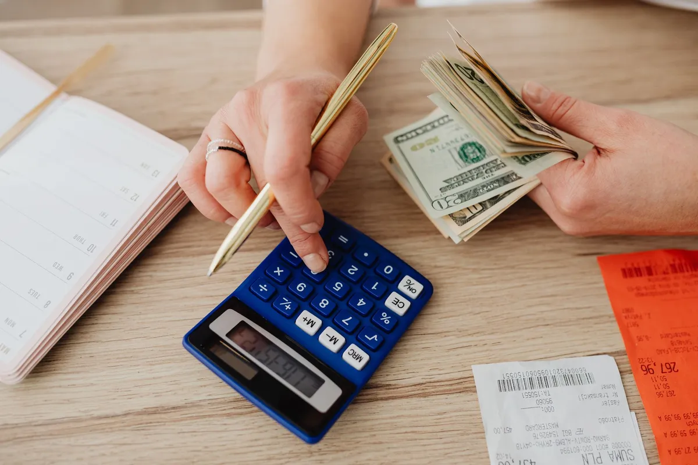

Quanto custa um cardápio digital próprio em 2026?

Antes de contratar, todo dono de delivery quer saber: quanto custa um cardápio digital próprio? A resposta depende do modelo de cobrança — e é aí que mora a diferença no seu lucro.
Os 3 modelos de cobrança
1. Comissão por pedido (iFood e similares)
Parece barato porque "não tem mensalidade", mas a comissão de 12% a 30% por pedido custa caro conforme você cresce.
2. Mensalidade alta (R$150 a R$300/mês)
Vários cardápios digitais cobram nessa faixa e ainda travam recursos importantes atrás de planos mais caros.
3. Mensalidade fixa baixa e sem comissão
O modelo do Menuzia: R$67/mês fixo, sem taxa por pedido, com tudo incluso.
O que está incluso no Menuzia por R$67/mês
- Cardápio digital profissional
- Painel de pedidos em tempo real e dashboard de métricas
- Campanhas de WhatsApp ilimitadas
- Robô de atendimento 24h
- Rastreamento de vendas (Pixel + Google)
- Gestão de motoboys com GPS e impressão automática
- Configuração feita pela nossa equipe + suporte técnico
O custo escondido que ninguém conta
O maior custo não é a mensalidade — é a comissão somada ao longo do ano e a perda da sua base de clientes. Faça as contas: muitas vezes um plano fixo se paga em poucos dias de venda. Veja se cardápio digital sem comissão vale a pena no seu caso.
Pare de pagar comissão por pedido
Tenha seu cardápio digital próprio por R$67/mês fixo. Nós configuramos pra você e damos todo o suporte técnico.
Criar Meu Cardápio Agora →